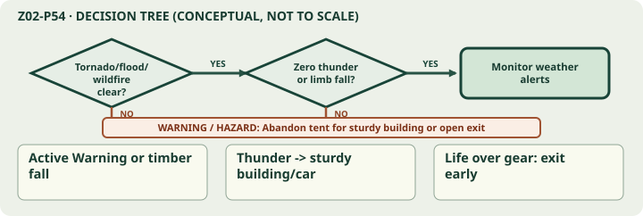

Z02-P54 · Shelter and housing · New manuscript
Decide when wind, flood, lightning or tornado requires abandoning camp
Define clear objective triggers for leaving a tent or campsite before severe hazards turn evacuation lethal.
When it applies · Any outdoor camp or temporary shelter facing severe weather warnings, rising water, wildfire or falling timber.
Equipment · Weather alert receiver, mapped evacuation route to substantial shelter and ready grab-bag essentials.

Actions
- Abandon tents and forested campsites immediately upon a Tornado Warning, Flash Flood Warning, approaching wildfire evacuation order or active tree/limb failures in rising gusts.[E17, T16, C19, E13]
- Move from fabric tents or open tarps to a reachable substantial building or hard-topped enclosed vehicle at the first sound of thunder, waiting 30 minutes after the last thunder before returning.[E07, E18]
- Decide BEFORE storm arrival whenever a Watch and darkening sky indicate your exit path could flood, blow down with trees or lose visibility.[T16, E18, T13]
Failure recognition · Staying inside a nylon tent beneath tall pines during a Severe Thunderstorm or Tornado Warning under the illusion that tent walls offer protection.[E07, E17, E13]
Verify · Before sunset, every group member can name the exact weather trigger that ends camp and the nearest substantial refuge or exit road.[E07, E17, T13, ED]
Stop or change course · When an abandonment trigger fires, prioritize human life over tents and gear—leave equipment behind rather than delaying exit into an active hazard.[T13, E17, C19]
Evidence and editorial notes
- C19 · FEMA / Ready.gov · Wildfires (current web edition)
- Section: Wildfires > Stay Safe and Smoke Protection · Conditions: Approaching wildfire or heavy smoke in camp or community
Support: Evacuate early along open routes per official orders, protect airways from heavy smoke, and avoid turning back into active fire corridors.
Limitations: Cloth face coverings do not filter fine wildfire smoke particles; fitted particulate respirators or clean indoor air are distinct interventions. · Conflicting evidence: None; coordinates with NWS-WILDFIRE.
Editorial note: Covers wildfire escape and smoke decision thresholds in Z01/Z03. · Specialist reviewer: Emergency management and fire safety
Primary source · checked 2026-11-24 - E07 · NWS · Lightning Tips (current web edition)
- Section: If you hear thunder; when it is safe to return · Conditions: Thunderstorm and reachable substantial building or enclosed hard-topped vehicle
Support: Move to proper shelter at thunder. Wait 30 minutes after last thunder before resuming outdoor activity.
Limitations: Fabric tents, open pavilions, and trees are not lightning-safe shelters. · Conflicting evidence: None; 30-minute rule is standard NWS guidance.
Editorial note: Separates weather cover from lightning protection in Z02. · Specialist reviewer: Weather safety and emergency management
Primary source · checked 2026-11-24 - E13 · USDA Forest Service · Hazard Tree Safety (agency PDF)
- Section: What You Can Do to Reduce Risk · Conditions: Forest campsites and stops
Support: Look for dead trees and falling material. Stay away from hazardous trees and move away when winds make the site unsafe.
Limitations: Internal decay and root rot can cause live-looking trees to fail in saturated soils or high wind. · Conflicting evidence: Does not specify a universal exclusion radius; tree height and slope govern fall reach.
Editorial note: Prevents false precision on fall-zone distance while requiring overhead screening. · Specialist reviewer: Land management and arboriculture safety
Primary source · checked 2026-11-24 - E17 · National Weather Service · Tornado Safety: During a Tornado (Current web edition)
- Section: During a Tornado: home, outside, vehicle · Conditions: Tornado warning; sturdy shelter may be unavailable
Support: Prefer the suitable lowest interior area of a sturdy building. If unreachable, use NWS location-specific last-resort guidance and avoid overpasses and flood-prone low ground.
Limitations: The branch is contextual. Never portray a ditch, vehicle or makeshift shelter as reliably safe. · Conflicting evidence: See A02 claim audit for boundaries.
Editorial note: Establishes severe-storm abandonment threshold for camp shelters. · Specialist reviewer: Emergency management and meteorology
Primary source · checked 2026-11-25 - E18 · NWS · Thunderstorm Safety (current web edition)
- Section: Thunderstorm Safety > Hail, Downbursts, and Flooding · Conditions: Approaching severe thunderstorm with hail, outflow gusts, or heavy rain
Support: Outflow gusts, hail, lightning, and flash runoff can strike before rain arrives at camp; break exposed ridge travel early and secure or vacate lightweight shelters.
Limitations: Storm cells can intensify faster than backcountry foot travel can clear exposed terrain. · Conflicting evidence: None; integrates with E04 and E07.
Editorial note: Connects storm-structure warning cues to early shelter selection. · Specialist reviewer: Weather safety and emergency management
Primary source · checked 2026-11-24 - T13 · FEMA / Ready.gov · Evacuation (current web edition)
- Section: Evacuation > Before, During, and After Evacuation · Conditions: Developing wildfire, flood, storm, or infrastructure emergency
Support: Identify multiple exit routes ahead of time, keep essential go-bags and fuel ready, leave promptly when authorities order evacuation, and do not return until officials declare the area safe.
Limitations: Late departure can trap groups behind road closures, smoke, or rising water. · Conflicting evidence: None; pairs with NWS-FLOOD and READY-WILDFIRE.
Editorial note: Establishes clear leave-early decision thresholds for multi-hazard scenarios. · Specialist reviewer: Emergency management
Primary source · checked 2026-11-24 - T16 · NWS · Flood Safety (current web edition)
- Section: Flood Watches and Warnings; Turn Around Don’t Drown · Conditions: U.S. flood alerts and routes crossing moving or standing floodwater
Support: Use the local flood alert wording and follow directions to move to safer higher ground. Never drive around a barricade or enter a flooded route.
Limitations: Stages, timing and detours depend on event and locality; no observable safe crossing depth. · Conflicting evidence: See A02 claim audit for boundaries.
Editorial note: Clarifies Watch vs Warning decision thresholds in Z01 scenarios. · Specialist reviewer: Emergency management and meteorology
Primary source · checked 2026-11-24
Source lineage · NWS lightning, tornado, wind and flood safety; new manuscript · Classification · New manuscript.